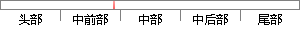

在中本聪的论文中，区块和链被描述为一种用于记录比特币交易过程中交易历史的数据结构。
片段位置图

相似结果|
1
原句片段：在中本聪的论文中，区块和链被描述为一种用于记录比特币交易过程中交易历史的数据结构。
相似片段 1：▌1区块链是什么? 2008年中本聪发表的论文《比特...在其中,区块链被描述为用于记录比特币交易的账目...机制并不需要展开检验之前发生的所有交易历史。...
相似片段 2：公认的最早关于区块链的描述性文献是中本聪所撰写的 比特币:一种点对点的电子...在其 中,区块链被描述为用于记录比特币交易的账目历史。 安全可信赖的区块链...
|
※ 片段修改建议 ※
近似词参考：- 描述：描写 形貌
- 记录：记实 纪录 记载
- 过程中：过程当中
- 交易：买卖 生意业务
- 历史：汗青
系统自动生成语句：在中本聪的论文中，区块和链被描写为一种用于记实比特币买卖过程当中买卖汗青的数据结构。
注：本片段修改建议为系统自动生成，仅供参考。